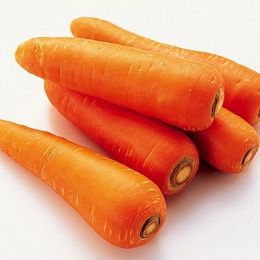

推薦
胡蘿蔔
紅蘿蔔含豐富的纖維和維生素A，但是卡路里卻很低；適量的維生素A可以增強免疫系統，改善皮膚和皮膚健康，因此它們為您的狗狗提供了絕佳的零嘴。咀嚼生胡蘿蔔也對狗狗的牙齒有益但是比較不好消化，而煮沸之後營養成分更高哦! 。
優格
優格富含蛋白質，鈣和消化道所需的養分，是改善狗的消化健康的絕妙食物。 購買時需確認您選擇的優格含活性成分，並且不含脂肪和甜味劑。優格鈣含量很高，可促進毛茸茸的家庭成員牙齒和骨骼的健康。優格有天然的益生菌，有助於食物的消化、抵抗感染。
南瓜
南瓜擁有大量的維生素，礦物質和纖維，這些營養成分有助於泌尿道的健康。南瓜子和皮都含有油脂。這些油將幫助保持狗狗的尿道健康。有排尿失禁的老犬可以在飲食中使用一些南瓜。南瓜還能調節消化系統，這是由於南瓜中含有大量纖維。纖維調節消化，增加糞便體積，從而減少狗狗腹瀉。